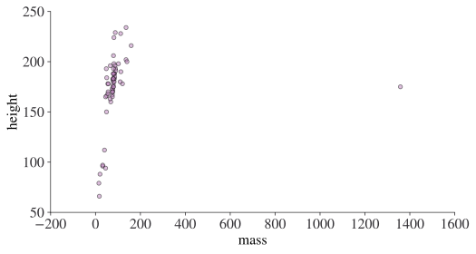
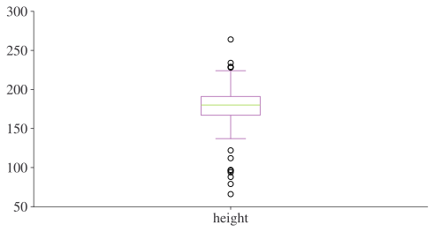
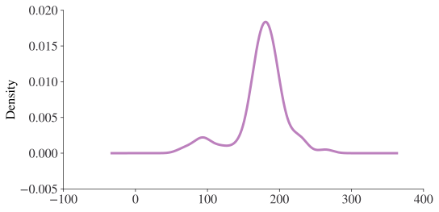
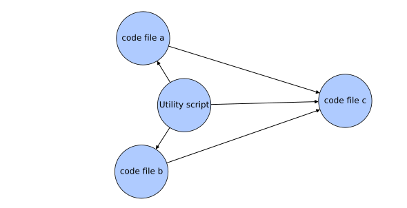

print(1 / 200 * 30)
print((59 + 73 + 2) / 3)0.15
44.666666666666664(code-basics)= # Coding Basics
In this chapter, you’ll learn about the basics of objects, types, operations, conditions, loops, functions, and imports. These are the basic building blocks of almost all programming languages and will serve you well for your coding and economics journey.
This chapter has benefited from the excellent Python Programming for Data Science book by Tomas Beuzen.
Remember, you can launch this page interactively by using the 'Colab' button under the rocket symbol (<i class="fas fa-rocket"></i>) at the top of the page. You can also download this page as a Jupyter Notebook to run on your own computer: use the 'download .ipynb' button under the download symbol the top of the page and open that file using Visual Studio Code.It’s worth saying at the outset that no-one memorises half of the stuff you’ll see in this book. 80% or more of time spent programming is actually time spent looking up how to do this or that online, ‘debugging’ a code for errors, or testing code. This applies to all programmers, regardless of level. You are here to learn the skills and concepts of programming, not the precise syntax (which is easy to look up later).

Knowing how to Google is one of the most important skills of any coder. No-one remembers every function from every library. Here are some useful coding resources:
when you have an error, look on Stack Overflow to see if anyone else had the same error (they probably did) and how they overcame it.
if you’re having trouble navigating a new package or library, look up the documentation online. The best libraries put as much effort into documentation as they do the code base.
use cheat sheets to get on top of a range of functionality quickly. For instance, this excellent (mostly) base Python Cheat Sheet.
if you’re having a coding issue, take a walk to think about the problem, or explain your problem to an animal toy on your desk (traditionally a rubber duck, but other animals are available).
Let’s review some basics in the interests of getting you up to speed as quickly as possible. You can use Python as a calculator:
print(1 / 200 * 30)
print((59 + 73 + 2) / 3)0.15
44.666666666666664print(1 / 200 * 30)
print((59 + 73 + 2) / 3)0.15
44.666666666666664The extra package numpy contains many of the additional mathematical operators that you might need. If you don’t already have numpy installed, open up the terminal in Visual Studio Code (go to “Terminal -> New Terminal” and then type pip install numpy into the terminal then hit return). Once you have numpy installed, you can import it and use it like this:
import numpy as np
print(np.sin(np.pi / 2))1.0import numpy as np
print(np.sin(np.pi / 2))1.0You can create new objects with the assignment operator =. You should think of this as copying the value of whatever is on the right-hand side into the variable on the left-hand side.
x = 3 * 4
print(x)12x = 3 * 4
print(x)12There are several structures in Python that capture multiple objects simultaneously but perhaps the most common is the list, which is designated by square brackets.
primes = [1, 2, 3, 5, 7, 11, 13]
print(primes)[1, 2, 3, 5, 7, 11, 13]primes = [1, 2, 3, 5, 7, 11, 13]
print(primes)[1, 2, 3, 5, 7, 11, 13]All Python statements where you create objects (known as assignment statements) have the same form:
object_name = valueWhen reading that code, say “object name gets value” in your head.
You can always inspect an already-created object by typing its name into the interactive window:
primes[1, 2, 3, 5, 7, 11, 13]primes[1, 2, 3, 5, 7, 11, 13]If you want to know what type of object it is, use type(object) in the interactive window like this:
type(primes)listtype(primes)listVisual Studio Code has some powerful features to help you keep track of objects:
If you’re an economist, you hardly need to be told you what a function is. In coding, it’s much the same as in mathematics: a function has inputs, it performs its function, and it returns any outputs. Python has a large number of built-in functions. You can also import functions from packages (like we did with np.sin) or define your own.
In coding, a function has inputs, it performs its function, and it returns any outputs. Let’s see a simple example of using a built-in function, sum():
sum(primes)42sum(primes)42The general structure of functions is the function name, followed by brackets, followed by one or more arguments. Sometimes there will also be keyword arguments. For example, sum() comes with a keyword argument that tells the function to start counting from a specific number. Let’s see this in action by starting from ten:
sum(primes, start=10)52sum(primes, start=10)52If you’re ever unsure of what a function does, you can call help() on it (itself a function):
help(sum)Help on built-in function sum in module builtins:
sum(iterable, /, start=0)
Return the sum of a 'start' value (default: 0) plus an iterable of numbers
When the iterable is empty, return the start value.
This function is intended specifically for use with numeric values and may
reject non-numeric types.
help(sum)Help on built-in function sum in module builtins:
sum(iterable, /, start=0)
Return the sum of a 'start' value (default: 0) plus an iterable of numbers
When the iterable is empty, return the start value.
This function is intended specifically for use with numeric values and may
reject non-numeric types.
Or, in Visual Studio Code, hover your mouse over the function name.
````unxpefgkyezn Exercise
Why does this code not work?
my_variable = 10
my_varıableLook carefully! This may seem like an exercise in pointlessness, but training your brain to notice even the tiniest difference will pay off when programming.
## Values, variables, and types
A value is datum such as a number or text. There are different types of values: 352.3 is known as a float or double, 22 is an integer, and "Hello World!" is a string. A variable is a name that refers to a value: you can think of a variable as a box that has a value, or multiple values, packed inside it.
Almost any word can be a variable name as long as it starts with a letter or an underscore, although there are some special keywords that can't be used because they already have a role in the Python language: these include `if`, `while`, `class`, and `lambda`.
Creating a variable in Python is achieved via an assignment (putting a value in the box), and this assignment is done via the `=` operator. The box, or variable, goes on the left while the value we wish to store appears on the right. It's simpler than it sounds:
::: {#209ef434 .cell execution_count=136}
``` {.python .cell-code}
a = 10
print(a)
```
::: {.cell-output .cell-output-stdout}
```
10
```
:::
:::
::: {#9fb86f40 .cell execution_count=137}
``` {.python .cell-code}
a = 10
print(a)
```
::: {.cell-output .cell-output-stdout}
```
10
```
:::
:::
This creates a variable `a`, assigns the value 10 to it, and prints it. Sometimes you will hear variables referred to as *objects*. Everything that is not a literal value, such as `10`, is an object. In the above example, `a` is an object that has been assigned the value `10`.
How about this:
::: {#63c32d9b .cell execution_count=138}
``` {.python .cell-code}
b = "This is a string"
print(b)
```
::: {.cell-output .cell-output-stdout}
```
This is a string
```
:::
:::
::: {#3ae64a36 .cell execution_count=139}
``` {.python .cell-code}
b = "This is a string"
print(b)
```
::: {.cell-output .cell-output-stdout}
```
This is a string
```
:::
:::
It's the same thing but with a different **type** of data, a string instead of an integer. Python is *dynamically typed*, which means it will guess what type of variable you're creating as you create it. This has pros and cons, with the main pro being that it makes for more concise code.
```{admonition} Important
Everything is an object, and every object has a type.
```
The most basic built-in data types that you'll need to know about are: integers `10`, floats `1.23`, strings `like this`, booleans `True`, and nothing `None`. Python also has a built-in type called a list `[10, 15, 20]` that can contain anything, even *different* types. So
::: {#ad23883a .cell execution_count=140}
``` {.python .cell-code}
list_example = [10, 1.23, "like this", True, None]
print(list_example)
```
::: {.cell-output .cell-output-stdout}
```
[10, 1.23, 'like this', True, None]
```
:::
:::
::: {#0bdc4bf2 .cell execution_count=141}
``` {.python .cell-code}
list_example = [10, 1.23, "like this", True, None]
print(list_example)
```
::: {.cell-output .cell-output-stdout}
```
[10, 1.23, 'like this', True, None]
```
:::
:::
is completely valid code. `None` is a special type of nothingness, and represents an object with no value. It has type `NoneType` and is more useful than you might think!
As well as the built-in types, packages can define their own custom types. If you ever want to check the type of a Python variable, you can call the `type()` function on it like so:
::: {#46a517ee .cell execution_count=142}
``` {.python .cell-code}
type(list_example)
```
::: {.cell-output .cell-output-display execution_count=142}
```
list
```
:::
:::
This is especially useful for debugging `ValueError` messages.
Below is a table of common data types in Python:
| Name | Type name | Type Category | Description | Example |
| :-------------------- | :--------- | :------------- | :-------------------------------------------- | :----------------------------------------- |
| integer | `int` | Numeric Type | positive/negative whole numbers | `22` |
| floating point number | `float` | Numeric Type | real number in decimal form | `3.14159` |
| boolean | `bool` | Boolean Values | true or false | `True` |
| string | `str` | Sequence Type | text | `"Hello World!"` |
| list | `list` | Sequence Type | a collection of objects - mutable & ordered | `['text entry', True, 16]` |
| tuple | `tuple` | Sequence Type | a collection of objects - immutable & ordered | `(51.02, -0.98)` |
| dictionary | `dict` | Mapping Type | mapping of key-value pairs | `{'name':'Ada', 'subject':'computer science'}` |
| none | `NoneType` | Null Object | represents no value | `None` |
| function | `function` | Function | Represents a function | `def add_one(x): return x+1` |
````{admonition} Exercise
What type is this Python object?
```python
cities_to_temps = {"Paris": 32, "London": 22, "Seville": 36, "Wellesley": 29}
```
What type is the first key (hint: comma separated entries form key-value pairs)?You may notice that there are several kinds of brackets that appear in the code we’ve seen so far, including [], {}, and (). These can play different roles depending on the context, but the most common uses are:
[] is used to denote a list, eg ['a', 'b'], or to signify accessing a position using an index, eg vector[0] to get the first entry of a variable called vector.
{} is used to denote a set, eg {'a', 'b'}, or a dictionary (with pairs of terms), eg {'first_letter': 'a', 'second_letter': 'b'}.
() is used to denote a tuple, eg ('a', 'b'), or the arguments to a function, eg function(x) where x is the input passed to the function, or to indicate the order operations are carried out.
Lists are a really useful way to work with lots of data at once. They’re defined with square brackets, with entries separated by commas. You can also construct them by appending entries:
list_example.append("one more entry")
print(list_example)[10, 1.23, 'like this', True, None, 'one more entry']list_example.append("one more entry")
print(list_example)[10, 1.23, 'like this', True, None, 'one more entry', 'one more entry']And you can access earlier entries using an index, which begins at 0 and ends at one less than the length of the list (this is the convention in many programming languages). For instance, to print specific entries at the start, using 0, and end, using -1:
print(list_example[0])
print(list_example[-1])10
one more entryprint(list_example[0])
print(list_example[-1])10
one more entryunxpefgkyezn Exercise How might you access the penultimate entry in a list object if you didn't know how many elements it had?
As well as accessing positions in lists using indexing, you can use slices on lists. This uses the colon character, :, to stand in for ‘from the beginning’ or ‘until the end’ (when only appearing once). For instance, to print just the last two entries, we would use the index -2: to mean from the second-to-last onwards. Here are two distinct examples: getting the first three and last three entries to be successively printed:
print(list_example[:3])
print(list_example[-3:])[10, 1.23, 'like this']
[None, 'one more entry', 'one more entry']Slicing can be even more elaborate than that because we can jump entries using a second colon. Here’s a full example that begins at the second entry (remember the index starts at 0), runs up until the second-to-last entry (exclusive), and jumps every other entry inbetween (range just produces a list of integers from the value to one less than the last):
list_of_numbers = list(range(1, 11))
start = 1
stop = -1
step = 2
print(list_of_numbers[start:stop:step])[2, 4, 6, 8]list_of_numbers = list(range(1, 11))
start = 1
stop = -1
step = 2
print(list_of_numbers[start:stop:step])[2, 4, 6, 8]A handy trick is that you can print a reversed list entirely using double colons:
print(list_of_numbers[::-1])[10, 9, 8, 7, 6, 5, 4, 3, 2, 1]print(list_of_numbers[::-1])[10, 9, 8, 7, 6, 5, 4, 3, 2, 1]unxpefgkyezn Exercise Slice the `list_example` from earlier to get only the first five entries.
As noted, lists can hold any type, including other lists! Here’s a valid example of a list that’s got a lot going on:
wacky_list = [
3.1415,
16,
["five", 4, 3],
(91, 93, 90),
"Hello World!",
True,
None,
{"key": "value", "key2": "value2"},
]
wacky_list[3.1415,
16,
['five', 4, 3],
(91, 93, 90),
'Hello World!',
True,
None,
{'key': 'value', 'key2': 'value2'}]wacky_list = [
3.1415,
16,
["five", 4, 3],
(91, 93, 90),
"Hello World!",
True,
None,
{"key": "value", "key2": "value2"},
]
wacky_list[3.1415,
16,
['five', 4, 3],
(91, 93, 90),
'Hello World!',
True,
None,
{'key': 'value', 'key2': 'value2'}]In reality, it’s usually not a good idea to mix data types in a list, but Python is very flexible. Other iterables (objects composed of multiple elements, of which the list is just one in Python) can also store objects of different types.
unxpefgkyezn Exercise Can you identify the types of each of the entries in `wacky_list`?
All of the basic operators you see in mathematics are available to use: + for addition, - for subtraction, * for multiplication, ** for powers, / for division, and % for modulo. These work as you’d expect on numbers. But these operators are sometimes defined for other built-in data types too. For instance, we can ‘sum’ strings (which really concatenates them):
string_one = "This is an example "
string_two = "of string concatenation"
string_full = string_one + string_two
print(string_full)This is an example of string concatenationstring_one = "This is an example "
string_two = "of string concatenation"
string_full = string_one + string_two
print(string_full)This is an example of string concatenationIt works for lists too:
list_one = ["apples", "oranges"]
list_two = ["pears", "satsumas"]
list_full = list_one + list_two
print(list_full)['apples', 'oranges', 'pears', 'satsumas']list_one = ["apples", "oranges"]
list_two = ["pears", "satsumas"]
list_full = list_one + list_two
print(list_full)['apples', 'oranges', 'pears', 'satsumas']Perhaps more surprisingly, you can multiply strings!
string = "apples, "
print(string * 3)apples, apples, apples, string = "apples, "
print(string * 3)apples, apples, apples, Below is a table of the basic arithmetic operations.
| Operator | Description |
|---|---|
+ |
addition |
- |
subtraction |
* |
multiplication |
/ |
division |
** |
exponentiation |
// |
integer division / floor division |
% |
modulo |
@ |
matrix multiplication |
As well as the usual operators, Python supports assignment operators. An example of one is x+=3, which is equivalent to running x = x + 3. Pretty much all of the operators can be used in this way.
```unxpefgkyezn Exercise Using Python operations only, what is
$ $
## Strings
In some ways, strings are treated a bit like lists, meaning you can access the individual characters via slicing and indexing. For example:
::: {#4507b65c .cell execution_count=160}
``` {.python .cell-code}
string = "cheesecake"
print(string[-4:])cakestring = "cheesecake"
print(string[-4:])cakeBoth lists and strings will also allow you to use the len() command to get their length:
string = "cheesecake"
print("String has length:")
print(len(string))
list_of_numbers = range(1, 20)
print("List of numbers has length:")
print(len(list_of_numbers))String has length:
10
List of numbers has length:
19string = "cheesecake"
print("String has length:")
print(len(string))
list_of_numbers = range(1, 20)
print("List of numbers has length:")
print(len(list_of_numbers))String has length:
10
List of numbers has length:
19unxpefgkyezn Exercise What is the `len` of a list created by `range(n)` where `n` could be any integer?
Strings have type string and can be defined by single or double quotes, eg string = "cheesecake" would have been equally valid above. It’s best practice to use one convention and stick to it, and most people use double quotes for strings.
There are various functions built into Python to help you work with strings that are particularly useful for cleaning messy data. For example, imagine you have a variable name like ‘This Is /A Variable’. (You may think this is implausibly bad; if only that were true…). Let’s see if we can clean this up:
string = "This Is /A Variable "
string = string.replace("/", "").rstrip().lower()
print(string)this is a variablestring = "This Is /A Variable "
string = string.replace("/", "").rstrip().lower()
print(string)this is a variableThe steps above replace the character ‘/’, strip out whitespace on the right hand-side of the string, and put everything in lower case. The brackets after the words signify that a function has been applied; we’ll see more of functions later.
unxpefgkyezn Exercise Using string operations, strip the leading and trailing spaces, make upper case, and remove the underscores from the string `" this_is_a_better_variable_name "`.
Changing Type to String
We’ll look at this in more detail shortly, but while we’re on strings, it seems useful to mention it now: you’ll often want to output one type of data as another, and Python generally knows what you’re trying to achieve if you, for example, print() a boolean value. For numbers, there are more options and you can see a big list of advice on string formatting of all kinds of things here. For now, let’s just see a simple example of something called an f-string, a string that combines a number and a string (these begin with an f for formatting):
value = 20
sqrt_val = 20 ** 0.5
print(f"The square root of {value:d} is {sqrt_val:.2f}")The square root of 20 is 4.47value = 20
sqrt_val = 20 ** 0.5
print(f"The square root of {value:d} is {sqrt_val:.2f}")The square root of 20 is 4.47The formatting command :d is an instruction to treat value like an integer, while :.2f is an instruction to print it like a float with 2 decimal places.
f-strings are only available in Python 3.6+unxpefgkyezn Exercise Write a print command with the `sqrt_val` expressed to 3 decimal places.
Some of the most important operations you will perform are with True and False values, also known as boolean data types. There are two types of operation that are associated with booleans: boolean operations, in which existing booleans are combined, and condition operations, which create a boolean when executed.
Boolean operators that return booleans are as follows:
| Operator | Description |
|---|---|
x and y |
are x and y both True? |
x or y |
is at least one of x and y True? |
not x |
is x False? |
These behave as you’d expect: True and False evaluates to False, while True or False evaluates to True. There’s also the not keyword. For example
not TrueFalsenot TrueFalseas you would expect.
Conditions are expressions that evaluate as booleans. A simple example is 10 == 20. The == is an operator that compares the objects on either side and returns True if they have the same values–though be careful using it with different data types.
Here’s a table of conditions that return booleans:
| Operator | Description |
|---|---|
x == y |
is x equal to y? |
x != y |
is x not equal to y? |
x > y |
is x greater than y? |
x >= y |
is x greater than or equal to y? |
x < y |
is x less than y? |
x <= y |
is x less than or equal to y? |
x is y |
is x the same object as y? |
As you can see from the table, the opposite of == is !=, which you can read as ‘not equal to the value of’. Here’s an example of ==:
boolean_condition = 10 == 20
print(boolean_condition)Falseboolean_condition = 10 == 20
print(boolean_condition)Falseunxpefgkyezn Exercise What does `not (not True)` evaluate to?
The real power of conditions comes when we start to use them in more complex examples. Some of the keywords that evaluate conditions are if, else, and, or, in, not, and is. Here’s an example showing how some of these conditional keywords work:
name = "Ada"
score = 99
if name == "Ada" and score > 90:
print("Ada, you achieved a high score.")
if name == "Smith" or score > 90:
print("You could be called Smith or have a high score")
if name != "Smith" and score > 90:
print("You are not called Smith and you have a high score")Ada, you achieved a high score.
You could be called Smith or have a high score
You are not called Smith and you have a high scorename = "Ada"
score = 99
if name == "Ada" and score > 90:
print("Ada, you achieved a high score.")
if name == "Smith" or score > 90:
print("You could be called Smith or have a high score")
if name != "Smith" and score > 90:
print("You are not called Smith and you have a high score")Ada, you achieved a high score.
You could be called Smith or have a high score
You are not called Smith and you have a high scoreAll three of these conditions evaluate as True, and so all three messages get printed. Given that == and != test for equality and not equal, respectively, you may be wondering what the keywords is and not are for. Remember that everything in Python is an object, and that values can be assigned to objects. == and != compare values, while is and not compare objects. For example,
name_list = ["Ada", "Adam"]
name_list_two = ["Ada", "Adam"]
# Compare values
print(name_list == name_list_two)
# Compare objects
print(name_list is name_list_two)True
Falsename_list = ["Ada", "Adam"]
name_list_two = ["Ada", "Adam"]
# Compare values
print(name_list == name_list_two)
# Compare objects
print(name_list is name_list_two)True
FalseNote that code with lots of branching if statements is not very helpful to you or to anyone else who reads your code. Some automatic code checkers will pick this up and tell you that your code is too complex. Almost all of the time, there’s a way to rewrite your code without lots of branching logic that will be better and clearer than having many nested if statements.
One of the most useful conditional keywords is in. This one must pop up ten times a day in most coders’ lives because it can pick out a variable or make sure something is where it’s supposed to be.
name_list = ["Lovelace", "Smith", "Hopper", "Babbage"]
print("Lovelace" in name_list)
print("Bob" in name_list)True
Falsename_list = ["Lovelace", "Smith", "Hopper", "Babbage"]
print("Lovelace" in name_list)
print("Bob" in name_list)True
Falseunxpefgkyezn Exercise Check if "a" is in the string "Walloping weasels" using `in`. Is "a" `in` "Anodyne"?
The opposite is not in.
Finally, one conditional construct you’re bound to use at some point, is the if…else structure:
score = 98
if score == 100:
print("Top marks!")
elif score > 90 and score < 100:
print("High score!")
elif score > 10 and score <= 90:
pass
else:
print("Better luck next time.")High score!score = 98
if score == 100:
print("Top marks!")
elif score > 90 and score < 100:
print("High score!")
elif score > 10 and score <= 90:
pass
else:
print("Better luck next time.")High score!Note that this does nothing if the score is between 11 and 90, and prints a message otherwise.
unxpefgkyezn Exercise Create a new `if` ... `elif` ... `else` statement that prints "well done" if a score is over 90, "good" if between 40 and 90, and "bad luck" otherwise.
One nice feature of Python is that you can make multiple boolean comparisons in a single line.
a, b = 3, 6
1 < a < b < 20Truea, b = 3, 6
1 < a < b < 20TrueYou’ll have seen that certain parts of the code examples are indented. Code that is part of a function, a conditional clause, or loop is indented. This isn’t a code style choice, it’s actually what tells the language that some code is to be executed as part of, say, a loop and not to executed after the loop is finished.
Here’s a basic example of indentation as part of an if loop. The print() statement that is indented only executes if the condition evaluates to true.
x = 10
if x > 2:
print("x is greater than 2")x is greater than 2x = 10
if x > 2:
print("x is greater than 2")x is greater than 2The VS Code extension *indent-rainbow* colours different levels of indentation differently for ease of reading.When functions, conditional clauses, or loops are combined together, they each cause an increase in the level of indentation. Here’s a double indent.
if x > 2:
print("outer conditional cause")
for i in range(4):
print("inner loop")outer conditional cause
inner loop
inner loop
inner loop
inner loopif x > 2:
print("outer conditional cause")
for i in range(4):
print("inner loop")outer conditional cause
inner loop
inner loop
inner loop
inner loopThe standard practice for indentation is that each sub-statement should be indented by 4 spaces. It can be hard to keep track of these but, as usual, Visual Studio Code has you covered. Go to Settings (the cog in the bottom left-hand corner, then click Settings) and type ‘Whitespace’ into the search bar. Under ‘Editor: Render Whitespace’, select ‘boundary’. This will show any whitespace that is more than one character long using faint grey dots. Each level of indentation in your Python code should now begin with four grey dots showing that it consists of four spaces.
Rendering whitespace using Visual Studio Code's settings makes it easier to navigate different levels of indentation.unxpefgkyezn Exercise Try writing a code snippet that reaches the triple level of indentation.
Another built-in Python type that is enormously useful is the dictionary. This provides a mapping one set of variables to another (either one-to-one or many-to-one). Let’s see an example of defining a dictionary and using it:
fruit_dict = {
"Jazz": "Apple",
"Owari": "Satsuma",
"Seto": "Satsuma",
"Pink Lady": "Apple",
}
# Add an entry
fruit_dict.update({"Cox": "Apple"})
variety_list = ["Jazz", "Jazz", "Seto", "Cox"]
fruit_list = [fruit_dict[x] for x in variety_list]
print(fruit_list)['Apple', 'Apple', 'Satsuma', 'Apple']fruit_dict = {
"Jazz": "Apple",
"Owari": "Satsuma",
"Seto": "Satsuma",
"Pink Lady": "Apple",
}
# Add an entry
fruit_dict.update({"Cox": "Apple"})
variety_list = ["Jazz", "Jazz", "Seto", "Cox"]
fruit_list = [fruit_dict[x] for x in variety_list]
print(fruit_list)['Apple', 'Apple', 'Satsuma', 'Apple']From an input list of varieties, we get an output list of their associated fruits. Another good trick to know with dictionaries is that you can iterate through their keys and values:
fruit_dict = {
"Jazz": "Apple",
"Owari": "Satsuma",
"Seto": "Satsuma",
"Pink Lady": "Apple",
}
# Add an entry
fruit_dict.update({"Cox": "Apple"})
variety_list = ["Jazz", "Jazz", "Seto", "Cox"]
fruit_list = [fruit_dict[x] for x in variety_list]
print(fruit_list)Jazz maps into Apple
Owari maps into Satsuma
Seto maps into Satsuma
Pink Lady maps into Apple
Cox maps into Appleunxpefgkyezn Exercise Update the fruit dictionary with another two entries and then iterate through all of the entries printing each mapping using `.items()` as above.
A loop is a way of executing a similar piece of code over and over in a similar way. The most useful loops are for loops and list comprehensions.
A for loop does something for the time that the condition is satisfied. For example,
name_list = ["Lovelace", "Smith", "Pigou", "Babbage"]
for name in name_list:
print(name)Lovelace
Smith
Pigou
Babbagename_list = ["Lovelace", "Smith", "Pigou", "Babbage"]
for name in name_list:
print(name)Lovelace
Smith
Pigou
Babbageprints out a name until all names have been printed out. Note the colon after the statement and before the indent.
As long as your object is an iterable (ie you can iterate over it), then it can be used in this way in a for loop. The most common examples are lists and tuples, but you can also iterate over strings (in which case each character is selected in turn). One gotcha to be aware of is if you iterate over a string, say “hello”, instead of iterating over a list (or tuple) of strings, eg ["hello"]. In the latter case, you get:
for entry in ["hello"]:
print(entry)
print("---end entry---")hello
---end entry---for entry in ["hello"]:
print(entry)
print("---end entry---")hello
---end entry---While in the former you get something quite different and typically not all that useful:
for entry in "hello":
print(entry)
print("---end entry---")h
---end entry---
e
---end entry---
l
---end entry---
l
---end entry---
o
---end entry---for entry in "hello":
print(entry)
print("---end entry---")h
---end entry---
e
---end entry---
l
---end entry---
l
---end entry---
o
---end entry---unxpefgkyezn Exercise Write a for loop that prints out "coding for economists" so that each word is printed in a successive iteration.
A useful trick with for loops is the enumerate keyword, which runs through an index that keeps track of the place of items in a list:
name_list = ["Lovelace", "Smith", "Hopper", "Babbage"]
for i, name in enumerate(name_list):
print(f"The name in position {i} is {name}")The name in position 0 is Lovelace
The name in position 1 is Smith
The name in position 2 is Hopper
The name in position 3 is Babbagename_list = ["Lovelace", "Smith", "Hopper", "Babbage"]
for i, name in enumerate(name_list):
print(f"The name in position {i} is {name}")The name in position 0 is Lovelace
The name in position 1 is Smith
The name in position 2 is Hopper
The name in position 3 is BabbageRemember, Python indexes from 0 so the first entry of i will be zero. But, if you’d like to index from a different number, you can:
for i, name in enumerate(name_list, start=1):
print(f"The name in position {i} is {name}")The name in position 1 is Lovelace
The name in position 2 is Smith
The name in position 3 is Hopper
The name in position 4 is Babbagefor i, name in enumerate(name_list, start=1):
print(f"The name in position {i} is {name}")The name in position 1 is Lovelace
The name in position 2 is Smith
The name in position 3 is Hopper
The name in position 4 is BabbageAnother useful pattern when doing for loops with dictionaries is iteration over key, value pairs. As we saw earlier, what distinguishes a dictionary in Python is that it maps a key to a value, for example “apple” might map to “fruit”. Let’s take our example from earlier that mapped cities to temperatures. If we wanted to iterate over both keys and values, we can write a for loop like this:
cities_to_temps = {"Paris": 28, "London": 22, "Seville": 36, "Wellesley": 29}
for key, value in cities_to_temps.items():
print(f"In {key}, the temperature is {value} degrees C today.")In Paris, the temperature is 28 degrees C today.
In London, the temperature is 22 degrees C today.
In Seville, the temperature is 36 degrees C today.
In Wellesley, the temperature is 29 degrees C today.cities_to_temps = {"Paris": 28, "London": 22, "Seville": 36, "Wellesley": 29}
for key, value in cities_to_temps.items():
print(f"In {key}, the temperature is {value} degrees C today.")In Paris, the temperature is 28 degrees C today.
In London, the temperature is 22 degrees C today.
In Seville, the temperature is 36 degrees C today.
In Wellesley, the temperature is 29 degrees C today.Note that we added .items() to the end of the dictionary. And note that we didn’t have to call the key key, or the value value: these are set by their position. But part of best practice in writing code is that there should be no surprises, and writing key, value makes it really clear that you’re using values from a dictionary.
unxpefgkyezn Exercise Write a dictionary that maps four cities you know into their respective countries and print the results using the `key, value` iteration trick.
Another useful type of for loop is provided by the zip() function. You can think of the zip() function as being like a zipper, bringing elements from two different iterators together in turn. Here’s an example:
first_names = ["Ada", "Adam", "Grace", "Charles"]
last_names = ["Lovelace", "Smith", "Hopper", "Babbage"]
for forename, surname in zip(first_names, last_names):
print(f"{forename} {surname}")Ada Lovelace
Adam Smith
Grace Hopper
Charles Babbagefirst_names = ["Ada", "Adam", "Grace", "Charles"]
last_names = ["Lovelace", "Smith", "Hopper", "Babbage"]
for forename, surname in zip(first_names, last_names):
print(f"{forename} {surname}")Ada Lovelace
Adam Smith
Grace Hopper
Charles BabbageThe zip function is super useful in practice.
``unxpefgkyezn Exercise Zip together the first names from above with this jumbled list of surnames:[‘Babbage’, ‘Hopper’, ‘Smith’, ‘Lovelace’]`.
(Hint: you have seen a trick to help re-arrange lists earlier on in the Chapter.)
**List (and Other) Comprehensions**
There's a second way to do loops in Python and, in most but [not all](https://towardsdatascience.com/list-comprehensions-vs-for-loops-it-is-not-what-you-think-34071d4d8207) [cases](https://stackoverflow.com/questions/22108488/are-list-comprehensions-and-functional-functions-faster-than-for-loops), they run faster. More importantly, and *this* is the reason it's good practice to use them where possible, they are very readable. They are called *list comprehensions*.
List comprehensions can combine what a `for` loop and (if needed) what a `condition` do in a single line of code. First, let's look at a `for` loop that adds one to each value done as a list comprehension (NB: in practice, we would use super-fast **numpy** arrays for this kind of operation):
::: {#50814e5f .cell execution_count=202}
``` {.python .cell-code}
num_list = range(50, 60)
[1 + num for num in num_list][51, 52, 53, 54, 55, 56, 57, 58, 59, 60]:::
num_list = range(50, 60)
[1 + num for num in num_list][51, 52, 53, 54, 55, 56, 57, 58, 59, 60]The general pattern is a bit similar to with the for loop but there are some differences. There’s no colon, and no indenting. The syntax is “do something with x” then for x in iterable. Finally, the expression is wrapped in a [ and ] to make the output a list.
Note that lists are not the only wrapping you can provide to this kind of structure. A ( and ) to make it a generator (don’t worry about what this is for now), a { and } to make it a set (an object that only contains unique values), or it’s possible to create a dictionary from a comprehension too! List comprehensions are the most common, so if you only remember one kind, remember them.
```unxpefgkyezn Exercise Create a list comprehension that multiplies numbers in the range from 1 to 10 by 5.
Did you get the range right?
Let's now see how to include a condition within a list comprehension. Say we had a list of numbers and wanted to filter it according to whether the numbers divided by 3 or not using the modulo operator:
::: {#4fafa2be .cell execution_count=204}
``` {.python .cell-code}
number_list = range(1, 40)
divide_list = [x for x in number_list if x % 3 == 0]
print(divide_list)[3, 6, 9, 12, 15, 18, 21, 24, 27, 30, 33, 36, 39]:::
number_list = range(1, 40)
divide_list = [x for x in number_list if x % 3 == 0]
print(divide_list)[3, 6, 9, 12, 15, 18, 21, 24, 27, 30, 33, 36, 39]The syntax here is do something to x for x in something if x satisfies some condition.
Here’s another example that picks out only the names that include ‘Smith’ in them:
names_list = ["Joe Bloggs", "Adam Smith", "Sandra Noone", "leonara smith"]
smith_list = [x for x in names_list if "smith" in x.lower()]
print(smith_list)['Adam Smith', 'leonara smith']names_list = ["Joe Bloggs", "Adam Smith", "Sandra Noone", "leonara smith"]
smith_list = [x for x in names_list if "smith" in x.lower()]
print(smith_list)['Adam Smith', 'leonara smith']Note how we used ‘smith’ rather than ‘Smith’ and then used lower() to ensure we matched names regardless of the case they are written in.
We can even do a whole if … else construct inside a list comprehension:
names_list = ["Joe Bloggs", "Adam Smith", "Sandra Noone", "leonara smith"]
smith_list = [x if "smith" in x.lower() else "Not Smith!" for x in names_list]
print(smith_list)['Not Smith!', 'Adam Smith', 'Not Smith!', 'leonara smith']names_list = ["Joe Bloggs", "Adam Smith", "Sandra Noone", "leonara smith"]
smith_list = [x if "smith" in x.lower() else "Not Smith!" for x in names_list]
print(smith_list)['Not Smith!', 'Adam Smith', 'Not Smith!', 'leonara smith']Many of the constructs we’ve seen can be combined. For instance, there is no reason why we can’t have a nested or repeated list comprehension using zip(), and, perhaps more surprisingly, sometimes these are useful!
first_names = ["Ada", "Adam", "Grace", "Charles"]
last_names = ["Lovelace", "Smith", "Hopper", "Babbage"]
names_list = [x + " " + y for x, y in zip(first_names, last_names)]
print(names_list)['Ada Lovelace', 'Adam Smith', 'Grace Hopper', 'Charles Babbage']first_names = ["Ada", "Adam", "Grace", "Charles"]
last_names = ["Lovelace", "Smith", "Hopper", "Babbage"]
names_list = [x + " " + y for x, y in zip(first_names, last_names)]
print(names_list)['Ada Lovelace', 'Adam Smith', 'Grace Hopper', 'Charles Babbage']An even more extreme use of list comprehensions can deliver nested structures:
first_names = ["Ada", "Adam"]
last_names = ["Lovelace", "Smith"]
names_list = [[x + " " + y for x in first_names] for y in last_names]
print(names_list)[['Ada Lovelace', 'Adam Lovelace'], ['Ada Smith', 'Adam Smith']]first_names = ["Ada", "Adam"]
last_names = ["Lovelace", "Smith"]
names_list = [[x + " " + y for x in first_names] for y in last_names]
print(names_list)[['Ada Lovelace', 'Adam Lovelace'], ['Ada Smith', 'Adam Smith']]This gives a nested structure that (in this case) iterates over first_names first, and then last_names. (Note that this object is a list of lists of strings!)
Let’s see a dictionary comprehension now. These look a bit similar to set comprehensions because they use { and } at either end but they are different because they come with a colon separating the keys from the values:
{key: value for key, value in zip(first_names, last_names)}{'Ada': 'Lovelace', 'Adam': 'Smith'}{key: value for key, value in zip(first_names, last_names)}{'Ada': 'Lovelace', 'Adam': 'Smith'}unxpefgkyezn Exercise Create a nested list comprehension that results in a list of lists of strings equal to `[['a0', 'b0', 'c0'], ['a1', 'b1', 'c1'], ['a2', 'b2', 'c2']]` (ie a combination of the first three integers and letters of the alphabet). You may find that you need to convert numbers to strings using `str(x)` to do this.
If you’d like to learn more about list comprehensions, check out these short video tutorials.
Declaring a function starts with a def keyword for ‘define a function’. It then has a name, followed by brackets, (), which may contain function arguments and function keyword arguments. This is followed by a colon. The body of the function is then indented relative to the left-most text. Function arguments are defined in brackets following the name, with different inputs separated by commas. Any outputs are given with the return keyword, again with different variables separated by commas.
```unxpefgkyezn Arguments and keyword arguments :class: tip
arguments are the variables that functions always need, so a and b in def add(a, b): return a + b. The function won’t work without them! Function arguments are sometimes referred to as args.
Keyword arguments are the variables that are optional for functions, so c in def add(a, b, c=5): return a + b - c. If you do not provide a value for c when calling the function, it will automatically revert to c=5. Keyword arguments are sometimes referred to as kwargs.
Let's see a very simple example of a function with a single *argument* (or arg):
::: {#0450ad6c .cell execution_count=11}
``` {.python .cell-code}
def welcome_message(name):
return f"Hello {name}, and welcome!"
# Without indentation, this code is not part of function
name = "Ada"
output_string = welcome_message(name)
print(output_string)Hello Ada, and welcome!:::
def welcome_message(name):
return f"Hello {name}, and welcome!"
# Without indentation, this code is not part of function
name = "Ada"
output_string = welcome_message(name)
print(output_string)Hello Ada, and welcome!One powerful feature of functions is that we can define defaults for the input arguments. These are called keyword arguments (or kwargs). Let’s see that in action by defining a default value for name, along with multiple outputs–a hello message and a score.
def score_message(score, name="student"):
"""This is a doc-string, a string describing a function.
Args:
score (float): Raw score
name (str): Name of student
Returns:
str: A hello message.
float: A normalised score.
"""
norm_score = (score - 50) / 10
return f"Hello {name}", norm_score
# Without indentation, this code is not part of function
name = "Ada"
score = 98
# No name entered
print(score_message(score))
# Name entered
print(score_message(score, name=name))('Hello student', 4.8)
('Hello Ada', 4.8)def score_message(score, name="student"):
"""This is a doc-string, a string describing a function.
Args:
score (float): Raw score
name (str): Name of student
Returns:
str: A hello message.
float: A normalised score.
"""
norm_score = (score - 50) / 10
return f"Hello {name}", norm_score
# Without indentation, this code is not part of function
name = "Ada"
score = 98
# No name entered
print(score_message(score))
# Name entered
print(score_message(score, name=name))('Hello student', 4.8)
('Hello Ada', 4.8)unxpefgkyezn Exercise What is the return type of a function with multiple return values separated by commas following the `return` statement?
In that last example, you’ll notice that we added some text to the function. This is a doc-string, or documentation string. It’s there to help users (and, most likely, future you) to understand what the function does. Let’s see how this works in action by calling help() on the score_message function:
help(score_message)Help on function score_message in module __main__:
score_message(score, name='student')
This is a doc-string, a string describing a function.
Args:
score (float): Raw score
name (str): Name of student
Returns:
str: A hello message.
float: A normalised score.
help(score_message)Help on function score_message in module __main__:
score_message(score, name='student')
This is a doc-string, a string describing a function.
Args:
score (float): Raw score
name (str): Name of student
Returns:
str: A hello message.
float: A normalised score.
```unxpefgkyezn Exercise Write a function that returns a high five unicode character if the input is equal to “coding for economists” and a sad face, “:-/” otherwise.
Add a second argument that takes a default argument of an empty string but, if used, is added (concatenated) to the return message. Use it to create the return output, “:-/ here is my message.”
Write a doc-string for your function and call help on it.
To learn more about args and kwargs, check out these [short video tutorials](https://calmcode.io/args-kwargs/introduction.html).
## Scope
Scope refers to what parts of your code can see what other parts. There are three different scopes to bear in mind: local, global, and non-local.
**Local**
If you define a variable inside a function, the rest of your code won't be able to 'see' it or use it. For example, here's a function that creates a variable and then an example of calling that variable:
```python
def var_func():
str_variable = 'Hello World!'
var_func()
print(str_variable)This would raise an error, because as far as your general code is concerned str_variable doesn’t exist outside of the function. This is an example of a local variable, one that only exists within a function.
If you want to create variables inside a function and have them persist, you need to explicitly pass them out using, for example return str_variable like this:
def var_func():
str_variable = "Hello World!"
return str_variable
returned_var = var_func()
print(returned_var)Hello World!def var_func():
str_variable = "Hello World!"
return str_variable
returned_var = var_func()
print(returned_var)Hello World!Global
A variable declared outside of a function is known as a global variable because it is accessible everywhere:
y = "I'm a global variable"
def print_y():
print("y is inside a function:", y)
print_y()
print("y is outside a function:", y)y is inside a function: I'm a global variable
y is outside a function: I'm a global variabley = "I'm a global variable"
def print_y():
print("y is inside a function:", y)
print_y()
print("y is outside a function:", y)y is inside a function: I'm a global variable
y is outside a function: I'm a global variableThis is just a taster of what can be done using base Python with few extra packages. For more, especially if you’ve done other chapters in the book already and want to go a bit deeper, see the Chapter on {ref}code-advanced. Otherwise, head on to the next chapter!
:::
(data-quickstart)= # Data Analysis Quickstart
Here we’ll do a whistlestop tour of data analysis in Python using a structure called a dataframe. Dataframes do everything a spreadsheet does, and a whole lot more. At their simplest, dataframes are a tabular representation of data with rows and columns. The data in each column can be anything; text, numbers, Python objects such as lists or dictionaries, or even other dataframes!
The ability to extract, clean, and analyse data is one of the core skills any economist needs. Fortunately, the (open source) tools that are available for data analysis have improved enormously in recent years, and working with them can be a delight——even the most badly formatted data can be beaten into shape. You may be sceptical that these open source tools can be as powerful as the costly, closed source tools you may already know: but, over time, you’ll come to see how they do far, far more, and do it faster too.
In this chapter, we’ll see analysis on a single dataframe using the Star Wars’ characters dataset as an example. For a more thorough grounding in using data, see the next chapter ({ref}working-with-data).
This chapter uses the pandas and numpy packages. If you’re running this code, you may need to install these packages. The Anaconda distribution of Python comes with pandas and numpy installed. If you don’t have these installed, you can install them by running either conda install packagename or pip install packagename on your computer’s command line. You can find a brief guide to installing packages in {ref}code-preliminaries.
This chapter is hugely indebted to the fantastic Python Data Science Handbook, and both the pandas documentation and amazing introductory tutorials.
First we must import the packages we’ll be using in the rest of this chapter.
%pip install pandas numpy matplotlibRequirement already satisfied: pandas in e:\anaconda\lib\site-packages (2.2.2)
Requirement already satisfied: numpy in e:\anaconda\lib\site-packages (1.26.4)
Requirement already satisfied: matplotlib in e:\anaconda\lib\site-packages (3.8.4)
Requirement already satisfied: python-dateutil>=2.8.2 in e:\anaconda\lib\site-packages (from pandas) (2.9.0.post0)
Requirement already satisfied: pytz>=2020.1 in e:\anaconda\lib\site-packages (from pandas) (2024.1)
Requirement already satisfied: tzdata>=2022.7 in e:\anaconda\lib\site-packages (from pandas) (2023.3)
Requirement already satisfied: contourpy>=1.0.1 in e:\anaconda\lib\site-packages (from matplotlib) (1.2.0)
Requirement already satisfied: cycler>=0.10 in e:\anaconda\lib\site-packages (from matplotlib) (0.11.0)
Requirement already satisfied: fonttools>=4.22.0 in e:\anaconda\lib\site-packages (from matplotlib) (4.51.0)
Requirement already satisfied: kiwisolver>=1.3.1 in e:\anaconda\lib\site-packages (from matplotlib) (1.4.4)
Requirement already satisfied: packaging>=20.0 in e:\anaconda\lib\site-packages (from matplotlib) (23.2)
Requirement already satisfied: pillow>=8 in e:\anaconda\lib\site-packages (from matplotlib) (10.3.0)
Requirement already satisfied: pyparsing>=2.3.1 in e:\anaconda\lib\site-packages (from matplotlib) (3.0.9)
Requirement already satisfied: six>=1.5 in e:\anaconda\lib\site-packages (from python-dateutil>=2.8.2->pandas) (1.16.0)
Note: you may need to restart the kernel to use updated packages.import pandas as pd
import numpy as np
import matplotlib.pyplot as pltimport pandas as pd
import numpy as np
import matplotlib.pyplot as plt# Set seed for random numbers
seed_for_prng = 78557
prng = np.random.default_rng(seed_for_prng) # prng=probabilistic random number generator# Set seed for random numbers
seed_for_prng = 78557
prng = np.random.default_rng(seed_for_prng) # prng=probabilistic random number generatorimport matplotlib_inline.backend_inline
# Plot settings
plt.style.use(
"https://github.com/aeturrell/coding-for-economists/raw/main/plot_style.txt"
)
matplotlib_inline.backend_inline.set_matplotlib_formats("svg")
# Set max rows displayed for readability
pd.set_option("display.max_rows", 20)Loading data into a dataframe is achieved with commands like df = pd.read_csv(...) or df = pd.read_stata(...). Let’s load the Star Wars data from the internet:
df = (pd.read_csv(
"https://github.com/aeturrell/coding-for-economists/raw/main/data/starwars.csv",
index_col=0,
)
.dropna(subset=["species"])
)
# Check info about dataframe
df.info()<class 'pandas.core.frame.DataFrame'>
Index: 82 entries, 0 to 86
Data columns (total 8 columns):
# Column Non-Null Count Dtype
--- ------ -------------- -----
0 name 82 non-null object
1 height 77 non-null float64
2 mass 58 non-null float64
3 hair_color 77 non-null object
4 eye_color 80 non-null object
5 gender 79 non-null object
6 homeworld 74 non-null object
7 species 82 non-null object
dtypes: float64(2), object(6)
memory usage: 5.8+ KBdf = (pd.read_csv(
"https://github.com/aeturrell/coding-for-economists/raw/main/data/starwars.csv",
index_col=0,
)
.dropna(subset=["species"])
)
# Check info about dataframe
df.info()<class 'pandas.core.frame.DataFrame'>
Index: 82 entries, 0 to 86
Data columns (total 8 columns):
# Column Non-Null Count Dtype
--- ------ -------------- -----
0 name 82 non-null object
1 height 77 non-null float64
2 mass 58 non-null float64
3 hair_color 77 non-null object
4 eye_color 80 non-null object
5 gender 79 non-null object
6 homeworld 74 non-null object
7 species 82 non-null object
dtypes: float64(2), object(6)
memory usage: 5.8+ KBhead()df.head()| name | height | mass | hair_color | eye_color | gender | homeworld | species | |
|---|---|---|---|---|---|---|---|---|
| 0 | Luke Skywalker | 172.0 | 77.0 | blond | blue | male | Tatooine | Human |
| 1 | C-3PO | 167.0 | 75.0 | NaN | yellow | NaN | Tatooine | Droid |
| 2 | R2-D2 | 96.0 | 32.0 | NaN | red | NaN | Naboo | Droid |
| 3 | Darth Vader | 202.0 | 136.0 | none | yellow | male | Tatooine | Human |
| 4 | Leia Organa | 150.0 | 49.0 | brown | brown | female | Alderaan | Human |
unxpefgkyezn Exercise What happens if you pass a number to `head()`, eg `head(10)`?
df.head()| name | height | mass | hair_color | eye_color | gender | homeworld | species | |
|---|---|---|---|---|---|---|---|---|
| 0 | Luke Skywalker | 172.0 | 77.0 | blond | blue | male | Tatooine | Human |
| 1 | C-3PO | 167.0 | 75.0 | NaN | yellow | NaN | Tatooine | Droid |
| 2 | R2-D2 | 96.0 | 32.0 | NaN | red | NaN | Naboo | Droid |
| 3 | Darth Vader | 202.0 | 136.0 | none | yellow | male | Tatooine | Human |
| 4 | Leia Organa | 150.0 | 49.0 | brown | brown | female | Alderaan | Human |
df.loc[condition(s) or row(s), column(s)].loc stands for location and allows you to filter (aka subset) a dataframe. .loc works like an index, so it always comes with square brackets, eg df.loc[...].
loc takes two arguments. The first is a list of the names of the rows that you’d like to select or a condition (ie a list of booleans with the same length as the dataframe) that selects certain rows. Remember, you can easily create a series of booleans by checking a column against a condition, for example df['column1'] == 'black'.
The second argument consists of a list of column names you’d like to select. In both cases, : is shorthand for ‘use all rows’ or ‘use all columns’. If you have either condition(s) or column(s) (but not both), you can simply write df[condition(s)] or df[column(s)].
Here’s an example with a condition built up out of two parts and a list of columns:
df.loc[(df["hair_color"] == "brown") & (df["eye_color"] == "blue"), ["name", "species"]]| name | species | |
|---|---|---|
| 6 | Beru Whitesun lars | Human |
| 12 | Chewbacca | Wookiee |
| 17 | Jek Tono Porkins | Human |
| 30 | Qui-Gon Jinn | Human |
| 58 | Cliegg Lars | Human |
| 77 | Tarfful | Wookiee |
df.loc[(df["hair_color"] == "brown") & (df["eye_color"] == "blue"), ["name", "species"]]| name | species | |
|---|---|---|
| 6 | Beru Whitesun lars | Human |
| 12 | Chewbacca | Wookiee |
| 17 | Jek Tono Porkins | Human |
| 30 | Qui-Gon Jinn | Human |
| 58 | Cliegg Lars | Human |
| 77 | Tarfful | Wookiee |
unxpefgkyezn Exercise Using `loc`, filter the dataframe to `mass` greater than 50 for the `name` and `homeworld` columns
df.loc[(df['mass'] > 50), ['name', 'homeworld']]| name | homeworld | |
|---|---|---|
| 0 | Luke Skywalker | Tatooine |
| 1 | C-3PO | Tatooine |
| 3 | Darth Vader | Tatooine |
| 5 | Owen Lars | Tatooine |
| 6 | Beru Whitesun lars | Tatooine |
| ... | ... | ... |
| 75 | Shaak Ti | Shili |
| 76 | Grievous | Kalee |
| 77 | Tarfful | Kashyyyk |
| 78 | Raymus Antilles | Alderaan |
| 80 | Tion Medon | Utapau |
46 rows × 2 columns
df.loc[(df['mass'] > 50), ['name', 'homeworld']]| name | homeworld | |
|---|---|---|
| 0 | Luke Skywalker | Tatooine |
| 1 | C-3PO | Tatooine |
| 3 | Darth Vader | Tatooine |
| 5 | Owen Lars | Tatooine |
| 6 | Beru Whitesun lars | Tatooine |
| ... | ... | ... |
| 75 | Shaak Ti | Shili |
| 76 | Grievous | Kalee |
| 77 | Tarfful | Kashyyyk |
| 78 | Raymus Antilles | Alderaan |
| 80 | Tion Medon | Utapau |
46 rows × 2 columns
.sort_values()Use sort_values(columns, ascending=False) for descending order.
df.sort_values(["height", "mass"])| name | height | mass | hair_color | eye_color | gender | homeworld | species | |
|---|---|---|---|---|---|---|---|---|
| 18 | Yoda | 66.0 | 17.0 | white | brown | male | NaN | Yoda's species |
| 71 | Ratts Tyerell | 79.0 | 15.0 | none | NaN | male | Aleen Minor | Aleena |
| 28 | Wicket Systri Warrick | 88.0 | 20.0 | brown | brown | male | Endor | Ewok |
| 44 | Dud Bolt | 94.0 | 45.0 | none | yellow | male | Vulpter | Vulptereen |
| 2 | R2-D2 | 96.0 | 32.0 | NaN | red | NaN | Naboo | Droid |
| ... | ... | ... | ... | ... | ... | ... | ... | ... |
| 27 | Arvel Crynyd | NaN | NaN | brown | brown | male | NaN | Human |
| 81 | Finn | NaN | NaN | black | dark | male | NaN | Human |
| 82 | Rey | NaN | NaN | brown | hazel | female | NaN | Human |
| 83 | Poe Dameron | NaN | NaN | brown | brown | male | NaN | Human |
| 84 | BB8 | NaN | NaN | none | black | none | NaN | Droid |
82 rows × 8 columns
df.sort_values(["height", "mass"])| name | height | mass | hair_color | eye_color | gender | homeworld | species | |
|---|---|---|---|---|---|---|---|---|
| 18 | Yoda | 66.0 | 17.0 | white | brown | male | NaN | Yoda's species |
| 71 | Ratts Tyerell | 79.0 | 15.0 | none | NaN | male | Aleen Minor | Aleena |
| 28 | Wicket Systri Warrick | 88.0 | 20.0 | brown | brown | male | Endor | Ewok |
| 44 | Dud Bolt | 94.0 | 45.0 | none | yellow | male | Vulpter | Vulptereen |
| 2 | R2-D2 | 96.0 | 32.0 | NaN | red | NaN | Naboo | Droid |
| ... | ... | ... | ... | ... | ... | ... | ... | ... |
| 27 | Arvel Crynyd | NaN | NaN | brown | brown | male | NaN | Human |
| 81 | Finn | NaN | NaN | black | dark | male | NaN | Human |
| 82 | Rey | NaN | NaN | brown | hazel | female | NaN | Human |
| 83 | Poe Dameron | NaN | NaN | brown | brown | male | NaN | Human |
| 84 | BB8 | NaN | NaN | none | black | none | NaN | Droid |
82 rows × 8 columns
unxpefgkyezn Exercise Using `sort_values()`, sort the dataframe by the `name` column.
df.sort_values('name')| name | height | mass | hair_color | eye_color | gender | homeworld | species | |
|---|---|---|---|---|---|---|---|---|
| 25 | Ackbar | 180.0 | 83.0 | none | orange | male | Mon Cala | Mon Calamari |
| 51 | Adi Gallia | 184.0 | 50.0 | none | blue | female | Coruscant | Tholothian |
| 10 | Anakin Skywalker | 188.0 | 84.0 | blond | blue | male | Tatooine | Human |
| 27 | Arvel Crynyd | NaN | NaN | brown | brown | male | NaN | Human |
| 43 | Ayla Secura | 178.0 | 55.0 | none | hazel | female | Ryloth | Twi'lek |
| ... | ... | ... | ... | ... | ... | ... | ... | ... |
| 28 | Wicket Systri Warrick | 88.0 | 20.0 | brown | brown | male | Endor | Ewok |
| 11 | Wilhuff Tarkin | 180.0 | NaN | auburn, grey | blue | male | Eriadu | Human |
| 53 | Yarael Poof | 264.0 | NaN | none | yellow | male | Quermia | Quermian |
| 18 | Yoda | 66.0 | 17.0 | white | brown | male | NaN | Yoda's species |
| 66 | Zam Wesell | 168.0 | 55.0 | blonde | yellow | female | Zolan | Clawdite |
82 rows × 8 columns
df.sort_values('name')| name | height | mass | hair_color | eye_color | gender | homeworld | species | |
|---|---|---|---|---|---|---|---|---|
| 25 | Ackbar | 180.0 | 83.0 | none | orange | male | Mon Cala | Mon Calamari |
| 51 | Adi Gallia | 184.0 | 50.0 | none | blue | female | Coruscant | Tholothian |
| 10 | Anakin Skywalker | 188.0 | 84.0 | blond | blue | male | Tatooine | Human |
| 27 | Arvel Crynyd | NaN | NaN | brown | brown | male | NaN | Human |
| 43 | Ayla Secura | 178.0 | 55.0 | none | hazel | female | Ryloth | Twi'lek |
| ... | ... | ... | ... | ... | ... | ... | ... | ... |
| 28 | Wicket Systri Warrick | 88.0 | 20.0 | brown | brown | male | Endor | Ewok |
| 11 | Wilhuff Tarkin | 180.0 | NaN | auburn, grey | blue | male | Eriadu | Human |
| 53 | Yarael Poof | 264.0 | NaN | none | yellow | male | Quermia | Quermian |
| 18 | Yoda | 66.0 | 17.0 | white | brown | male | NaN | Yoda's species |
| 66 | Zam Wesell | 168.0 | 55.0 | blonde | yellow | female | Zolan | Clawdite |
82 rows × 8 columns
Slices can be passed by name using .loc[startrow:stoprow:step, startcolumn:stopcolumn:step] or by position using .iloc[start:stop:step, start:stop:step].
Choosing every 10th row from the second, and the columns between ‘name’ and ‘gender’:
df.loc[2::10, "name":"gender"]| name | height | mass | hair_color | eye_color | gender | |
|---|---|---|---|---|---|---|
| 2 | R2-D2 | 96.0 | 32.0 | NaN | red | NaN |
| 12 | Chewbacca | 228.0 | 112.0 | brown | blue | male |
| 22 | Bossk | 190.0 | 113.0 | none | red | male |
| 32 | Finis Valorum | 170.0 | NaN | blond | blue | male |
| 44 | Dud Bolt | 94.0 | 45.0 | none | yellow | male |
| 54 | Plo Koon | 188.0 | 80.0 | none | black | male |
| 64 | Bail Prestor Organa | 191.0 | NaN | black | brown | male |
| 75 | Shaak Ti | 178.0 | 57.0 | none | black | female |
df.loc[2::10, "name":"gender"]| name | height | mass | hair_color | eye_color | gender | |
|---|---|---|---|---|---|---|
| 2 | R2-D2 | 96.0 | 32.0 | NaN | red | NaN |
| 12 | Chewbacca | 228.0 | 112.0 | brown | blue | male |
| 22 | Bossk | 190.0 | 113.0 | none | red | male |
| 32 | Finis Valorum | 170.0 | NaN | blond | blue | male |
| 44 | Dud Bolt | 94.0 | 45.0 | none | yellow | male |
| 54 | Plo Koon | 188.0 | 80.0 | none | black | male |
| 64 | Bail Prestor Organa | 191.0 | NaN | black | brown | male |
| 75 | Shaak Ti | 178.0 | 57.0 | none | black | female |
Note that loc only works here with numbers for rows because it just so happens that the names of the rows are numbers. If the rows had names that were strings, and we wanted to subset rows by their index position, we would have to use iloc instead.
Choosing the first 5 rows and the last 2 columns by index position:
df.iloc[:5, -2:]| homeworld | species | |
|---|---|---|
| 0 | Tatooine | Human |
| 1 | Tatooine | Droid |
| 2 | Naboo | Droid |
| 3 | Tatooine | Human |
| 4 | Alderaan | Human |
df.iloc[:5, -2:]| homeworld | species | |
|---|---|---|
| 0 | Tatooine | Human |
| 1 | Tatooine | Droid |
| 2 | Naboo | Droid |
| 3 | Tatooine | Human |
| 4 | Alderaan | Human |
unxpefgkyezn Exercise Using `.iloc`, display the first 6 rows and last 6 columns.
df.iloc[:6, -6:]| mass | hair_color | eye_color | gender | homeworld | species | |
|---|---|---|---|---|---|---|
| 0 | 77.0 | blond | blue | male | Tatooine | Human |
| 1 | 75.0 | NaN | yellow | NaN | Tatooine | Droid |
| 2 | 32.0 | NaN | red | NaN | Naboo | Droid |
| 3 | 136.0 | none | yellow | male | Tatooine | Human |
| 4 | 49.0 | brown | brown | female | Alderaan | Human |
| 5 | 120.0 | brown, grey | blue | male | Tatooine | Human |
df.iloc[:6, -6:]| mass | hair_color | eye_color | gender | homeworld | species | |
|---|---|---|---|---|---|---|
| 0 | 77.0 | blond | blue | male | Tatooine | Human |
| 1 | 75.0 | NaN | yellow | NaN | Tatooine | Droid |
| 2 | 32.0 | NaN | red | NaN | Naboo | Droid |
| 3 | 136.0 | none | yellow | male | Tatooine | Human |
| 4 | 49.0 | brown | brown | female | Alderaan | Human |
| 5 | 120.0 | brown, grey | blue | male | Tatooine | Human |
.sample.sample(n) randomly selects n rows, .sample(frac=0.4) selects 40% of the data, replace=True samples with replacement, and passing weights= selects a number or fraction with the probabilities given by the passed weights. (Note that weights passed should have the same length as the dataframe.)
Taking a sample of 5 rows:
df.sample(5)| name | height | mass | hair_color | eye_color | gender | homeworld | species | |
|---|---|---|---|---|---|---|---|---|
| 69 | Taun We | 213.0 | NaN | none | black | female | Kamino | Kaminoan |
| 59 | Poggle the Lesser | 183.0 | 80.0 | none | yellow | male | Geonosis | Geonosian |
| 65 | Jango Fett | 183.0 | 79.0 | black | brown | male | Concord Dawn | Human |
| 2 | R2-D2 | 96.0 | 32.0 | NaN | red | NaN | Naboo | Droid |
| 22 | Bossk | 190.0 | 113.0 | none | red | male | Trandosha | Trandoshan |
df.sample(5)| name | height | mass | hair_color | eye_color | gender | homeworld | species | |
|---|---|---|---|---|---|---|---|---|
| 6 | Beru Whitesun lars | 165.0 | 75.0 | brown | blue | female | Tatooine | Human |
| 70 | Jocasta Nu | 167.0 | NaN | white | blue | female | Coruscant | Human |
| 80 | Tion Medon | 206.0 | 80.0 | none | black | male | Utapau | Pau'an |
| 57 | Cordé | 157.0 | NaN | brown | brown | female | Naboo | Human |
| 71 | Ratts Tyerell | 79.0 | 15.0 | none | NaN | male | Aleen Minor | Aleena |
unxpefgkyezn Exercise Use `.sample()` to sample 5% of the dataframe.
df.sample(frac=0.05)| name | height | mass | hair_color | eye_color | gender | homeworld | species | |
|---|---|---|---|---|---|---|---|---|
| 24 | Lobot | 175.0 | 79.0 | none | blue | male | Bespin | Human |
| 66 | Zam Wesell | 168.0 | 55.0 | blonde | yellow | female | Zolan | Clawdite |
| 23 | Lando Calrissian | 177.0 | 79.0 | black | brown | male | Socorro | Human |
| 64 | Bail Prestor Organa | 191.0 | NaN | black | brown | male | Alderaan | Human |
.rename()You can rename all columns by passing a function, for instance df.rename(columns=str.lower) to put all columns in lower case. Alternatively, use a dictionary to say which columns should be mapped to what:
df.rename(columns={"homeworld": "home_world"})| name | height | mass | hair_color | eye_color | gender | home_world | species | |
|---|---|---|---|---|---|---|---|---|
| 0 | Luke Skywalker | 172.0 | 77.0 | blond | blue | male | Tatooine | Human |
| 1 | C-3PO | 167.0 | 75.0 | NaN | yellow | NaN | Tatooine | Droid |
| 2 | R2-D2 | 96.0 | 32.0 | NaN | red | NaN | Naboo | Droid |
| 3 | Darth Vader | 202.0 | 136.0 | none | yellow | male | Tatooine | Human |
| 4 | Leia Organa | 150.0 | 49.0 | brown | brown | female | Alderaan | Human |
| ... | ... | ... | ... | ... | ... | ... | ... | ... |
| 81 | Finn | NaN | NaN | black | dark | male | NaN | Human |
| 82 | Rey | NaN | NaN | brown | hazel | female | NaN | Human |
| 83 | Poe Dameron | NaN | NaN | brown | brown | male | NaN | Human |
| 84 | BB8 | NaN | NaN | none | black | none | NaN | Droid |
| 86 | Padmé Amidala | 165.0 | 45.0 | brown | brown | female | Naboo | Human |
82 rows × 8 columns
df.rename(columns={"homeworld": "home_world"})| name | height | mass | hair_color | eye_color | gender | home_world | species | |
|---|---|---|---|---|---|---|---|---|
| 0 | Luke Skywalker | 172.0 | 77.0 | blond | blue | male | Tatooine | Human |
| 1 | C-3PO | 167.0 | 75.0 | NaN | yellow | NaN | Tatooine | Droid |
| 2 | R2-D2 | 96.0 | 32.0 | NaN | red | NaN | Naboo | Droid |
| 3 | Darth Vader | 202.0 | 136.0 | none | yellow | male | Tatooine | Human |
| 4 | Leia Organa | 150.0 | 49.0 | brown | brown | female | Alderaan | Human |
| ... | ... | ... | ... | ... | ... | ... | ... | ... |
| 81 | Finn | NaN | NaN | black | dark | male | NaN | Human |
| 82 | Rey | NaN | NaN | brown | hazel | female | NaN | Human |
| 83 | Poe Dameron | NaN | NaN | brown | brown | male | NaN | Human |
| 84 | BB8 | NaN | NaN | none | black | none | NaN | Droid |
| 86 | Padmé Amidala | 165.0 | 45.0 | brown | brown | female | Naboo | Human |
82 rows × 8 columns
.assign() or assignmentVery often you will want to create new columns based on existing columns.

There are two ways to do this. Let’s see them both with an example where we’d like to create a new column that contains height in metres, called "height_m:.
df['height_m'] = df['height']/100.assign() method on a dataframe directly. In this case, the assignment statement appears inside the brackets but you don’t need to write as much text because it’s clear from the context that, on the left-hand side of the assignment, we’re talking about the given dataframe. An example is df.assign(height_m=df["height"] / 100).Let’s see working examples of both of these assignment methods.
First let’s use the assignment approach:
df['height_m'] = df['height']/100
df.head()| name | height | mass | hair_color | eye_color | gender | homeworld | species | height_m | |
|---|---|---|---|---|---|---|---|---|---|
| 0 | Luke Skywalker | 172.0 | 77.0 | blond | blue | male | Tatooine | Human | 1.72 |
| 1 | C-3PO | 167.0 | 75.0 | NaN | yellow | NaN | Tatooine | Droid | 1.67 |
| 2 | R2-D2 | 96.0 | 32.0 | NaN | red | NaN | Naboo | Droid | 0.96 |
| 3 | Darth Vader | 202.0 | 136.0 | none | yellow | male | Tatooine | Human | 2.02 |
| 4 | Leia Organa | 150.0 | 49.0 | brown | brown | female | Alderaan | Human | 1.50 |
df['height_m'] = df['height']/100
df.head()| name | height | mass | hair_color | eye_color | gender | homeworld | species | height_m | |
|---|---|---|---|---|---|---|---|---|---|
| 0 | Luke Skywalker | 172.0 | 77.0 | blond | blue | male | Tatooine | Human | 1.72 |
| 1 | C-3PO | 167.0 | 75.0 | NaN | yellow | NaN | Tatooine | Droid | 1.67 |
| 2 | R2-D2 | 96.0 | 32.0 | NaN | red | NaN | Naboo | Droid | 0.96 |
| 3 | Darth Vader | 202.0 | 136.0 | none | yellow | male | Tatooine | Human | 2.02 |
| 4 | Leia Organa | 150.0 | 49.0 | brown | brown | female | Alderaan | Human | 1.50 |
And now with the .assign() function:
df = df.assign(height_m=df["height"] / 100)
df.head()| name | height | mass | hair_color | eye_color | gender | homeworld | species | height_m | |
|---|---|---|---|---|---|---|---|---|---|
| 0 | Luke Skywalker | 172.0 | 77.0 | blond | blue | male | Tatooine | Human | 1.72 |
| 1 | C-3PO | 167.0 | 75.0 | NaN | yellow | NaN | Tatooine | Droid | 1.67 |
| 2 | R2-D2 | 96.0 | 32.0 | NaN | red | NaN | Naboo | Droid | 0.96 |
| 3 | Darth Vader | 202.0 | 136.0 | none | yellow | male | Tatooine | Human | 2.02 |
| 4 | Leia Organa | 150.0 | 49.0 | brown | brown | female | Alderaan | Human | 1.50 |
df = df.assign(height_m=df["height"] / 100)
df.head()| name | height | mass | hair_color | eye_color | gender | homeworld | species | height_m | |
|---|---|---|---|---|---|---|---|---|---|
| 0 | Luke Skywalker | 172.0 | 77.0 | blond | blue | male | Tatooine | Human | 1.72 |
| 1 | C-3PO | 167.0 | 75.0 | NaN | yellow | NaN | Tatooine | Droid | 1.67 |
| 2 | R2-D2 | 96.0 | 32.0 | NaN | red | NaN | Naboo | Droid | 0.96 |
| 3 | Darth Vader | 202.0 | 136.0 | none | yellow | male | Tatooine | Human | 2.02 |
| 4 | Leia Organa | 150.0 | 49.0 | brown | brown | female | Alderaan | Human | 1.50 |
This was added to the end; ideally, we’d like it next to the height column, which we can achieve by sorting the columns (axis=1) alphabetically:
(df.assign(height_m=df["height"] / 100).sort_index(axis=1))| eye_color | gender | hair_color | height | height_m | homeworld | mass | name | species | |
|---|---|---|---|---|---|---|---|---|---|
| 0 | blue | male | blond | 172.0 | 1.72 | Tatooine | 77.0 | Luke Skywalker | Human |
| 1 | yellow | NaN | NaN | 167.0 | 1.67 | Tatooine | 75.0 | C-3PO | Droid |
| 2 | red | NaN | NaN | 96.0 | 0.96 | Naboo | 32.0 | R2-D2 | Droid |
| 3 | yellow | male | none | 202.0 | 2.02 | Tatooine | 136.0 | Darth Vader | Human |
| 4 | brown | female | brown | 150.0 | 1.50 | Alderaan | 49.0 | Leia Organa | Human |
| ... | ... | ... | ... | ... | ... | ... | ... | ... | ... |
| 81 | dark | male | black | NaN | NaN | NaN | NaN | Finn | Human |
| 82 | hazel | female | brown | NaN | NaN | NaN | NaN | Rey | Human |
| 83 | brown | male | brown | NaN | NaN | NaN | NaN | Poe Dameron | Human |
| 84 | black | none | none | NaN | NaN | NaN | NaN | BB8 | Droid |
| 86 | brown | female | brown | 165.0 | 1.65 | Naboo | 45.0 | Padmé Amidala | Human |
82 rows × 9 columns
(df.assign(height_m=df["height"] / 100).sort_index(axis=1))| eye_color | gender | hair_color | height | height_m | homeworld | mass | name | species | |
|---|---|---|---|---|---|---|---|---|---|
| 0 | blue | male | blond | 172.0 | 1.72 | Tatooine | 77.0 | Luke Skywalker | Human |
| 1 | yellow | NaN | NaN | 167.0 | 1.67 | Tatooine | 75.0 | C-3PO | Droid |
| 2 | red | NaN | NaN | 96.0 | 0.96 | Naboo | 32.0 | R2-D2 | Droid |
| 3 | yellow | male | none | 202.0 | 2.02 | Tatooine | 136.0 | Darth Vader | Human |
| 4 | brown | female | brown | 150.0 | 1.50 | Alderaan | 49.0 | Leia Organa | Human |
| ... | ... | ... | ... | ... | ... | ... | ... | ... | ... |
| 81 | dark | male | black | NaN | NaN | NaN | NaN | Finn | Human |
| 82 | hazel | female | brown | NaN | NaN | NaN | NaN | Rey | Human |
| 83 | brown | male | brown | NaN | NaN | NaN | NaN | Poe Dameron | Human |
| 84 | black | none | none | NaN | NaN | NaN | NaN | BB8 | Droid |
| 86 | brown | female | brown | 165.0 | 1.65 | Naboo | 45.0 | Padmé Amidala | Human |
82 rows × 9 columns
To overwrite existing columns just use height = df['height']/100 with the assign method or df['height'] = df['height']/100 with an assignment expression.
unxpefgkyezn Exercise Add a new column that gives the ratio of mass to height.
df['mass_height_ratio'] = df['mass'] / df['height']
df.head()| name | height | mass | hair_color | eye_color | gender | homeworld | species | height_m | mass_height_ratio | |
|---|---|---|---|---|---|---|---|---|---|---|
| 0 | Luke Skywalker | 172.0 | 77.0 | blond | blue | male | Tatooine | Human | 1.72 | 0.447674 |
| 1 | C-3PO | 167.0 | 75.0 | NaN | yellow | NaN | Tatooine | Droid | 1.67 | 0.449102 |
| 2 | R2-D2 | 96.0 | 32.0 | NaN | red | NaN | Naboo | Droid | 0.96 | 0.333333 |
| 3 | Darth Vader | 202.0 | 136.0 | none | yellow | male | Tatooine | Human | 2.02 | 0.673267 |
| 4 | Leia Organa | 150.0 | 49.0 | brown | brown | female | Alderaan | Human | 1.50 | 0.326667 |
df['mass_height_ratio'] = df['mass'] / df['height']
df.head()| name | height | mass | hair_color | eye_color | gender | homeworld | species | height_m | mass_height_ratio | |
|---|---|---|---|---|---|---|---|---|---|---|
| 0 | Luke Skywalker | 172.0 | 77.0 | blond | blue | male | Tatooine | Human | 1.72 | 0.447674 |
| 1 | C-3PO | 167.0 | 75.0 | NaN | yellow | NaN | Tatooine | Droid | 1.67 | 0.449102 |
| 2 | R2-D2 | 96.0 | 32.0 | NaN | red | NaN | Naboo | Droid | 0.96 | 0.333333 |
| 3 | Darth Vader | 202.0 | 136.0 | none | yellow | male | Tatooine | Human | 2.02 | 0.673267 |
| 4 | Leia Organa | 150.0 | 49.0 | brown | brown | female | Alderaan | Human | 1.50 | 0.326667 |
df = df.assign(mass_height_ratio=df['mass'] / df['height'])
df.head()| name | height | mass | hair_color | eye_color | gender | homeworld | species | height_m | mass_height_ratio | |
|---|---|---|---|---|---|---|---|---|---|---|
| 0 | Luke Skywalker | 172.0 | 77.0 | blond | blue | male | Tatooine | Human | 1.72 | 0.447674 |
| 1 | C-3PO | 167.0 | 75.0 | NaN | yellow | NaN | Tatooine | Droid | 1.67 | 0.449102 |
| 2 | R2-D2 | 96.0 | 32.0 | NaN | red | NaN | Naboo | Droid | 0.96 | 0.333333 |
| 3 | Darth Vader | 202.0 | 136.0 | none | yellow | male | Tatooine | Human | 2.02 | 0.673267 |
| 4 | Leia Organa | 150.0 | 49.0 | brown | brown | female | Alderaan | Human | 1.50 | 0.326667 |
df = df.assign(mass_height_ratio=df['mass'] / df['height'])
df.head()| name | height | mass | hair_color | eye_color | gender | homeworld | species | height_m | mass_height_ratio | |
|---|---|---|---|---|---|---|---|---|---|---|
| 0 | Luke Skywalker | 172.0 | 77.0 | blond | blue | male | Tatooine | Human | 1.72 | 0.447674 |
| 1 | C-3PO | 167.0 | 75.0 | NaN | yellow | NaN | Tatooine | Droid | 1.67 | 0.449102 |
| 2 | R2-D2 | 96.0 | 32.0 | NaN | red | NaN | Naboo | Droid | 0.96 | 0.333333 |
| 3 | Darth Vader | 202.0 | 136.0 | none | yellow | male | Tatooine | Human | 2.02 | 0.673267 |
| 4 | Leia Organa | 150.0 | 49.0 | brown | brown | female | Alderaan | Human | 1.50 | 0.326667 |
.describe()df.describe()| height | mass | height_m | mass_height_ratio | |
|---|---|---|---|---|
| count | 77.000000 | 58.000000 | 77.000000 | 58.000000 |
| mean | 175.103896 | 98.162069 | 1.751039 | 0.552307 |
| std | 34.483629 | 170.810183 | 0.344836 | 0.969546 |
| min | 66.000000 | 15.000000 | 0.660000 | 0.189873 |
| 25% | 167.000000 | 56.400000 | 1.670000 | 0.341837 |
| 50% | 180.000000 | 79.000000 | 1.800000 | 0.434426 |
| 75% | 191.000000 | 84.750000 | 1.910000 | 0.459349 |
| max | 264.000000 | 1358.000000 | 2.640000 | 7.760000 |
df.describe()| height | mass | height_m | mass_height_ratio | |
|---|---|---|---|---|
| count | 77.000000 | 58.000000 | 77.000000 | 58.000000 |
| mean | 175.103896 | 98.162069 | 1.751039 | 0.552307 |
| std | 34.483629 | 170.810183 | 0.344836 | 0.969546 |
| min | 66.000000 | 15.000000 | 0.660000 | 0.189873 |
| 25% | 167.000000 | 56.400000 | 1.670000 | 0.341837 |
| 50% | 180.000000 | 79.000000 | 1.800000 | 0.434426 |
| 75% | 191.000000 | 84.750000 | 1.910000 | 0.459349 |
| max | 264.000000 | 1358.000000 | 2.640000 | 7.760000 |
.groupby()df.groupby("species")[["height", "mass"]].mean()| height | mass | |
|---|---|---|
| species | ||
| Aleena | 79.0 | 15.0 |
| Besalisk | 198.0 | 102.0 |
| Cerean | 198.0 | 82.0 |
| Chagrian | 196.0 | NaN |
| Clawdite | 168.0 | 55.0 |
| ... | ... | ... |
| Vulptereen | 94.0 | 45.0 |
| Wookiee | 231.0 | 124.0 |
| Xexto | 122.0 | NaN |
| Yoda's species | 66.0 | 17.0 |
| Zabrak | 173.0 | 80.0 |
37 rows × 2 columns
df.groupby("species")[["height", "mass"]].mean()| height | mass | |
|---|---|---|
| species | ||
| Aleena | 79.0 | 15.0 |
| Besalisk | 198.0 | 102.0 |
| Cerean | 198.0 | 82.0 |
| Chagrian | 196.0 | NaN |
| Clawdite | 168.0 | 55.0 |
| ... | ... | ... |
| Vulptereen | 94.0 | 45.0 |
| Wookiee | 231.0 | 124.0 |
| Xexto | 122.0 | NaN |
| Yoda's species | 66.0 | 17.0 |
| Zabrak | 173.0 | 80.0 |
37 rows × 2 columns
unxpefgkyezn Exercise Find the standard deviation (using `std()`) of masses by `homeworld`.
df.groupby('homeworld')['mass'].std()homeworld
Alderaan 21.213203
Aleen Minor NaN
Bespin NaN
Bestine IV NaN
Cato Neimoidia NaN
...
Troiken NaN
Tund NaN
Utapau NaN
Vulpter NaN
Zolan NaN
Name: mass, Length: 47, dtype: float64df.groupby('homeworld')['mass'].std()homeworld
Alderaan 21.213203
Aleen Minor NaN
Bespin NaN
Bestine IV NaN
Cato Neimoidia NaN
...
Troiken NaN
Tund NaN
Utapau NaN
Vulpter NaN
Zolan NaN
Name: mass, Length: 47, dtype: float64.transform()Quite often, it’s useful to put a column into a dataframe that is the result of an intermediate groupby and aggregation. For example, subtracting the group mean or normalisation. Transform does this and returns a transformed column with the same shape as the original dataframe. Transform preserves the original index. (There are other methods, such as apply, that return a new dataframe with the groupby variables as a new index.)
Below is an example of transform being used to demean a variable according to the mean by species. Note that we are using lambda functions here. Lambda functions are a quick way of writing functions without needing to give them a name, e.g. lambda x: x+1 defines a function that adds one to x. In the example below, the x in the lambda function takes on the role of mass grouped by species.
df["mass_demean_species"] = df.groupby("species")["mass"].transform(lambda x: x - x.mean())
df.head()| name | height | mass | hair_color | eye_color | gender | homeworld | species | height_m | mass_height_ratio | mass_demean_species | |
|---|---|---|---|---|---|---|---|---|---|---|---|
| 0 | Luke Skywalker | 172.0 | 77.0 | blond | blue | male | Tatooine | Human | 1.72 | 0.447674 | -5.781818 |
| 1 | C-3PO | 167.0 | 75.0 | NaN | yellow | NaN | Tatooine | Droid | 1.67 | 0.449102 | 5.250000 |
| 2 | R2-D2 | 96.0 | 32.0 | NaN | red | NaN | Naboo | Droid | 0.96 | 0.333333 | -37.750000 |
| 3 | Darth Vader | 202.0 | 136.0 | none | yellow | male | Tatooine | Human | 2.02 | 0.673267 | 53.218182 |
| 4 | Leia Organa | 150.0 | 49.0 | brown | brown | female | Alderaan | Human | 1.50 | 0.326667 | -33.781818 |
df["mass_demean_species"] = df.groupby("species")["mass"].transform(lambda x: x - x.mean())
df.head()| name | height | mass | hair_color | eye_color | gender | homeworld | species | height_m | mass_height_ratio | mass_demean_species | |
|---|---|---|---|---|---|---|---|---|---|---|---|
| 0 | Luke Skywalker | 172.0 | 77.0 | blond | blue | male | Tatooine | Human | 1.72 | 0.447674 | -5.781818 |
| 1 | C-3PO | 167.0 | 75.0 | NaN | yellow | NaN | Tatooine | Droid | 1.67 | 0.449102 | 5.250000 |
| 2 | R2-D2 | 96.0 | 32.0 | NaN | red | NaN | Naboo | Droid | 0.96 | 0.333333 | -37.750000 |
| 3 | Darth Vader | 202.0 | 136.0 | none | yellow | male | Tatooine | Human | 2.02 | 0.673267 | 53.218182 |
| 4 | Leia Organa | 150.0 | 49.0 | brown | brown | female | Alderaan | Human | 1.50 | 0.326667 | -33.781818 |
unxpefgkyezn Exercise Create a `height_demean_homeworld` column that gives the height column with the mean height by homeworld subtracted.
.plot.*()Including scatter, area, bar, box, density, hexbin, histogram, kde, and line.
df.plot.scatter("mass", "height", alpha=0.5);
df.plot.scatter("mass", "height", alpha=0.5);df.plot.box(column="height");
df.plot.box(column="height");%pip install scipyRequirement already satisfied: scipy in e:\anaconda\lib\site-packages (1.13.1)
Requirement already satisfied: numpy<2.3,>=1.22.4 in e:\anaconda\lib\site-packages (from scipy) (1.26.4)
Note: you may need to restart the kernel to use updated packages.%pip install scipyRequirement already satisfied: scipy in e:\anaconda\lib\site-packages (1.13.1)
Requirement already satisfied: numpy<2.3,>=1.22.4 in e:\anaconda\lib\site-packages (from scipy) (1.26.4)
Note: you may need to restart the kernel to use updated packages.df["height"].plot.kde(bw_method=0.3);
You’ll often want to export your results to a latex file for inclusion in a paper, presentation, or poster. Let’s say we had some descriptive statistics on a dataframe:
table = df[["mass", "height"]].agg(['mean', 'std'])
table| mass | height | |
|---|---|---|
| mean | 98.162069 | 175.103896 |
| std | 170.810183 | 34.483629 |
table = df[["mass", "height"]].agg(['mean', 'std'])
table| mass | height | |
|---|---|---|
| mean | 98.162069 | 175.103896 |
| std | 170.810183 | 34.483629 |
You can export this to a range of formats, including string, html, xml, markdown, the clipboard (so you can paste it), Excel, and more. In your favourite IDE (integrated development environment) with a Python language server (eg Visual Studio Code, JupyterLab) start typing table.to and a list of possible methods beginning to should appear, including to_string().
Here is an example of exporting your pandas table to CSV (comma separated values):
table.to_csv()',mass,height\nmean,98.16206896551724,175.1038961038961\nstd,170.81018276436322,34.483628615842896\n'table.to_csv()',mass,height\r\nmean,98.16206896551724,175.1038961038961\r\nstd,170.8101827643632,34.483628615842896\r\n'One output format that doesn’t conform to this is LaTeX, for which you need the following:
Writing to the terminal isn’t that useful for getting your paper or report done! To export to a file, use table.style.to_latex('file.tex', ...) for LaTeX and table.to_csv('file.csv', ...).
``unxpefgkyezn Exercise Try exporting the table above using theto_string(“table.txt”)` method.
If you are running this locally, the file should appear in the directory in which you are running this notebook.
If you are using Google Colab to do these exercises, you can check that the file exported by running !ls in a new code cell to see all files in the current notebook directory. To get the contents of the file you created, run !cat table.txt.
## Summary
This has been a quick tour of what **pandas** can do, and shows the power of this ubiquitous tool, but we've barely seen a fraction of its features. The next chapter will go deeper into how to use **pandas**.
:::
# Lecture1-workflow-basics
:::{.quarto-embed-nb-cell notebook="D:\code\jiedan\12-28\test\homework\Lecture1-workflow-basics.ipynb" notebook-title="Workflow Basics" notebook-cellId="cell-0"}
(workflow-basics)=
# Workflow Basics
This chapter will take you through some of the essential parts of a Python workflow.
## Prerequisites
You'll need an installation of Python and Visual Studio Code with the Python extensions to get to grips with this chapter. If you haven't installed those yet, head back to {ref}`code-preliminaries` and follow the instructions there.
## Working with Python scripts and the interactive window
As a reminder, the figure below shows the typical layout of Visual Studio Code.

When you create a new script (File->New File->Save as 'your_script_name.py), it will appear in the part of the screen labelled as 3.
To run a script, select the code you want to run, right click, and select "Run Selection/Line in Interactive Window". You can also hit shift + enter if you set this shortcut up; if you haven't it's well worth doing and you can find the instructions in {ref}`code-preliminaries`.
Using the "Run Selection/Line in Interactive Window" option or using the shortcut will cause panel 5 in the above diagram (the interactive window) to appear, where you will see the code run and the outputs of your script appear.
```{tip}
If you have an issue getting the code to run in the interactive window, first check the instructions in {ref}`code-preliminaries`. If you're still having issues, it may be that Visual Studio Code isn't sure which Python to run, or where Python is on your system. To fix the latter problem, hit the "Select kernel" button in the top right-hand side of the interactive window.When you are first writing a script, it’s useful to be able to move back and forth between the script and the interactive window. You might execute a line of code (put the cursor on the relevant line and hit shift and enter) in the interactive window, then manually write out some code in the interactive window’s execution box (seen at the bottom of panel 5 saying “Type code here…”), and then explore some of the variables you’ve created with the variable explorer (using the button “Variables”) at the top of the interactive window.
But, once you’ve honed the code in your script, it’s good to make the script a complete analytical process that you are happy running end-to-end and that—for production or ‘final’ work—you would use the “Run Current File in Interactive Window” option to run all the way through. This is good practice because what is in your script is reproducible but what you’ve entered manually in the interactive window is not. And you want the outputs from your code to be reproducible and understandable by others (including future you!), but this is hard if there are undocumented extra lines of code that you only did on the fly via the interactive window’s execution box.
We already saw how to install packages in {ref}code-preliminaries. If you forgot, look back at how to do this now. In short, packages are installed using the command line or, on Windows, the Anaconda prompt. With either of these open, type conda install packagename and hit enter to both search for and install the package you need.
What about using a package that you’ve installed? That’s what we’ll look at now.
Let’s see an example of using the powerful numerical library numpy. There are different ways to import packages to use within a script or notebook; you can import the entire package in one go or just import the functions you need (if you know their names). When an entire package is imported, you can give it any name you like and the convention for numpy is to import it as the shortened ‘np’. All of the functions and methods of the package can be accessed by typing np followed by . and then typing the function name. This convention of importing packages with a given name makes your code easier to read, because you know exactly which package is doing what, and avoids any conflicts when functions from different packages have the same name.
As well as demonstrating importing the whole package for numpy, the example below shows importing just one specific function from numpy, inv, which does matrix inversion. Note that because inv was imported separately it can be used without an np prefix.
import numpy as np
from numpy.linalg import inv
matrix = np.array([[4.0, 2.0, 4.0], [4.0, 5.0, 6.0], [7.0, 8.0, 9.0]])
print("Matrix:")
print(matrix)
inv_mat = inv(matrix)
print("Inverse:")
print(inv_mat)Matrix:
[[4. 2. 4.]
[4. 5. 6.]
[7. 8. 9.]]
Inverse:
[[ 0.25 -1.16666667 0.66666667]
[-0.5 -0.66666667 0.66666667]
[ 0.25 1.5 -1. ]]import numpy as np
from numpy.linalg import inv
matrix = np.array([[4.0, 2.0, 4.0], [4.0, 5.0, 6.0], [7.0, 8.0, 9.0]])
print("Matrix:")
print(matrix)
inv_mat = inv(matrix)
print("Inverse:")
print(inv_mat)Matrix:
[[4. 2. 4.]
[4. 5. 6.]
[7. 8. 9.]]
Inverse:
[[ 0.25 -1.16666667 0.66666667]
[-0.5 -0.66666667 0.66666667]
[ 0.25 1.5 -1. ]]We could have imported all of numpy and it used it without extension using from numpy import * but this is considered bad practice as it fills our ‘namespace’ with function names that might clash with other packages and it’s less easy to read because you don’t know which function came from which package (one of Python’s mantras is “explicit is better than implict”). However, some packages are designed to be used like this, so, for example, you will see from lets_plot import * in this book.
If you want to check what packages you have installed in your Python environment, run `conda list` on your computer's command line (aka the *terminal* or *command prompt*).Sometimes you might forget what a function you have imported does! Or at least, you might not be sure what all of the optional arguments are. In Visual Studio Code, you can just hover your cursor over the name of the function and a box will come up that tells you everything you need to know about it. This box is auto-generated by doc-strings; information that is written in text just under a function’s definition (def statement).
An alternative way to see what a function does is to use a wonderful package called rich that does many things including providing an inspect() function. You will need to use pip to install rich by running pip install rich on the command line. Here’s an example of using rich’s inpsect method on the inv() function we imported above (methods=True reports all of the functionality of inv()):
from rich import inspect
inspect(inv, help=True)╭─────────────── <function inv at 0x000002308AF6F560> ────────────────╮ │ def inv(a): │ │ │ │ Compute the (multiplicative) inverse of a matrix. │ │ │ │ Given a square matrix `a`, return the matrix `ainv` satisfying │ │ ``dot(a, ainv) = dot(ainv, a) = eye(a.shape[0])``. │ │ │ │ Parameters │ │ ---------- │ │ a : (..., M, M) array_like │ │ Matrix to be inverted. │ │ │ │ Returns │ │ ------- │ │ ainv : (..., M, M) ndarray or matrix │ │ (Multiplicative) inverse of the matrix `a`. │ │ │ │ Raises │ │ ------ │ │ LinAlgError │ │ If `a` is not square or inversion fails. │ │ │ │ See Also │ │ -------- │ │ scipy.linalg.inv : Similar function in SciPy. │ │ │ │ Notes │ │ ----- │ │ │ │ .. versionadded:: 1.8.0 │ │ │ │ Broadcasting rules apply, see the `numpy.linalg` documentation for │ │ details. │ │ │ │ Examples │ │ -------- │ │ >>> from numpy.linalg import inv │ │ >>> a = np.array([[1., 2.], [3., 4.]]) │ │ >>> ainv = inv(a) │ │ >>> np.allclose(np.dot(a, ainv), np.eye(2)) │ │ True │ │ >>> np.allclose(np.dot(ainv, a), np.eye(2)) │ │ True │ │ │ │ If a is a matrix object, then the return value is a matrix as well: │ │ │ │ >>> ainv = inv(np.matrix(a)) │ │ >>> ainv │ │ matrix([[-2. , 1. ], │ │ [ 1.5, -0.5]]) │ │ │ │ Inverses of several matrices can be computed at once: │ │ │ │ >>> a = np.array([[[1., 2.], [3., 4.]], [[1, 3], [3, 5]]]) │ │ >>> inv(a) │ │ array([[[-2. , 1. ], │ │ [ 1.5 , -0.5 ]], │ │ [[-1.25, 0.75], │ │ [ 0.75, -0.25]]]) │ │ │ │ 34 attribute(s) not shown. Run inspect(inspect) for options. │ ╰─────────────────────────────────────────────────────────────────────╯
from rich import inspect
inspect(inv, help=True)╭─────────────── <function inv at 0x000002308AF6F560> ────────────────╮ │ def inv(a): │ │ │ │ Compute the (multiplicative) inverse of a matrix. │ │ │ │ Given a square matrix `a`, return the matrix `ainv` satisfying │ │ ``dot(a, ainv) = dot(ainv, a) = eye(a.shape[0])``. │ │ │ │ Parameters │ │ ---------- │ │ a : (..., M, M) array_like │ │ Matrix to be inverted. │ │ │ │ Returns │ │ ------- │ │ ainv : (..., M, M) ndarray or matrix │ │ (Multiplicative) inverse of the matrix `a`. │ │ │ │ Raises │ │ ------ │ │ LinAlgError │ │ If `a` is not square or inversion fails. │ │ │ │ See Also │ │ -------- │ │ scipy.linalg.inv : Similar function in SciPy. │ │ │ │ Notes │ │ ----- │ │ │ │ .. versionadded:: 1.8.0 │ │ │ │ Broadcasting rules apply, see the `numpy.linalg` documentation for │ │ details. │ │ │ │ Examples │ │ -------- │ │ >>> from numpy.linalg import inv │ │ >>> a = np.array([[1., 2.], [3., 4.]]) │ │ >>> ainv = inv(a) │ │ >>> np.allclose(np.dot(a, ainv), np.eye(2)) │ │ True │ │ >>> np.allclose(np.dot(ainv, a), np.eye(2)) │ │ True │ │ │ │ If a is a matrix object, then the return value is a matrix as well: │ │ │ │ >>> ainv = inv(np.matrix(a)) │ │ >>> ainv │ │ matrix([[-2. , 1. ], │ │ [ 1.5, -0.5]]) │ │ │ │ Inverses of several matrices can be computed at once: │ │ │ │ >>> a = np.array([[[1., 2.], [3., 4.]], [[1, 3], [3, 5]]]) │ │ >>> inv(a) │ │ array([[[-2. , 1. ], │ │ [ 1.5 , -0.5 ]], │ │ [[-1.25, 0.75], │ │ [ 0.75, -0.25]]]) │ │ │ │ 34 attribute(s) not shown. Run inspect(inspect) for options. │ ╰─────────────────────────────────────────────────────────────────────╯
unxpefgkyezn Exercise Write a code block that imports the **numpy** function `numpy.linalg.det()` as `det()`. Run `inspect()` on it. Find the determinant of `[[4, 3], [1, 7]]`.
Sometimes, you will want to call in some code from a different script that you wrote (rather than from a package provided by someone else). Imagine you have several scripts with code in, a, b, and c, all of which need to use the same underlying function that you have written. What do you do? (Note that “script with code in” is just a text file that has a .py extension and contains code.)
A central tenet of good coding is that you do not repeat yourself. Therefore, a bad solution to this problem would be to copy and paste the same code into all three of the scripts. A good solution is to write the code that’s need just once in a separate ‘utility’ script and have the other scripts import that one function. This also adheres to another important programming principle: that of writing modular code.
This schematic shows the kind of situation we’re talking about:
import networkx as nx
import matplotlib.pyplot as plt
import matplotlib_inline.backend_inline
# Plot settings
plt.style.use(
"https://github.com/aeturrell/coding-for-economists/raw/main/plot_style.txt"
)
matplotlib_inline.backend_inline.set_matplotlib_formats("svg")
graph = nx.DiGraph()
graph.add_edges_from(
[
("Utility script", "code file a"),
("Utility script", "code file b"),
("code file a", "code file c"),
("code file b", "code file c"),
("Utility script", "code file c"),
]
)
colour_node = "#AFCBFF"
fixed_pos = nx.spring_layout(graph, seed=100)
nx.draw(graph, pos=fixed_pos, with_labels=True, node_size=6000, node_color=colour_node)
extent = 1.4
plt.xlim(-extent, extent)
plt.ylim(-extent, extent)
plt.show();
import networkx as nx
import matplotlib.pyplot as plt
import matplotlib_inline.backend_inline
# Plot settings
plt.style.use(
"https://github.com/aeturrell/coding-for-economists/raw/main/plot_style.txt"
)
matplotlib_inline.backend_inline.set_matplotlib_formats("svg")
graph = nx.DiGraph()
graph.add_edges_from(
[
("Utility script", "code file a"),
("Utility script", "code file b"),
("code file a", "code file c"),
("code file b", "code file c"),
("Utility script", "code file c"),
]
)
colour_node = "#AFCBFF"
fixed_pos = nx.spring_layout(graph, seed=100)
nx.draw(graph, pos=fixed_pos, with_labels=True, node_size=6000, node_color=colour_node)
extent = 1.4
plt.xlim(-extent, extent)
plt.ylim(-extent, extent)
plt.show();
How can we give code files a, b, and c access to the functions etc in the “Utility script”? We would define a file ‘utilities.py’ that had the following function in that we would like to use in the other code files:
# Contents of utilities.py file
def really_useful_func(number):
return number*10Then, in ‘code_script_a.py’, we would write:
import utilities as utils
print(utils.really_useful_func(20))--------------------------------------------------------------------------- ModuleNotFoundError Traceback (most recent call last) Cell In[7], line 1 ----> 1 import utilities as utils 3 print(utils.really_useful_func(20)) ModuleNotFoundError: No module named 'utilities'
An alternative is to just import the function we want, with the name we want:
from utilities import really_useful_func as ru_fn
print(ru_fn(30))--------------------------------------------------------------------------- ModuleNotFoundError Traceback (most recent call last) Cell In[8], line 1 ----> 1 from utilities import really_useful_func as ru_fn 3 print(ru_fn(30)) ModuleNotFoundError: No module named 'utilities'
Another important example is the case where you want to run ‘utilities.py’ as a standalone script, but still want to borrow functions from it to run in other scripts. There’s a way to do this. Let’s change utilities.py to
# Contents of utilities.py file
def really_useful_func(number):
return number*10
def default_func():
print('Script has run')
if __name__ == '__main__':
default_func()What this says is that if we call ‘utilities.py’ from the command line, eg
python utilities.pyIt will return Script has run because, by executing the script alone, we are asking for anything in the main block defined at the end of the file to be run. But we can still import anything from utilities into other scripts as before–and in that case it is not the main script, but an import, and so the main block will not be executed by default.
You can important several functions at once from a module (aka another script file) like this:
from utilities import really_useful_func, default_funcunxpefgkyezn Exercise Write your own `utilities.py` that has a `super_useful_func` that accepts a number and returns the number divided by 10. In another script, `main.py`, try a) importing all of utilities and running `super_useful_func` on a number and, b), importing just `super_useful_func` from utilities and running it on a number.
Although most applications in economics will use the pandas package to read and write tabular data, it’s sometimes useful to know how to read and write arbitrary files using the built-in Python libraries too. To open a file
open('filename', mode)where mode could be r for read, a for append, w for write, and x to create a file. Create a file called text_example.txt and write a single line in it, ‘hello world’. To open the file and print the text, use:
with open('text_example.txt') as f:
text_in = f.read()
print(text_in)'hello world!\n'\n is the new line character. Now let’s try adding a line to the file:
with open('text_example.txt', 'a') as f:
f.write('this is another line\n')Writing and reading files using the with command is a quick and convenient shorthand for the less concise open, action, close pattern. For example, the above example can also be written as:
f = open('text_example.txt', 'a')
f.write('this is another line\n')
f.close()Although this short example shows opening and writing a text file, this approach can be used to edit a wide range of file extensions including .json, .xml, .csv, .tsv, and many more, including binary files in addition to plain text files.
Comments
Python will ignore any text after
#. This allows to you to write comments, text that is ignored by Python but can be read by other humans. We’ll sometimes include comments in examples explaining what’s happening with the code.Comments can be helpful for briefly describing what the subsequent code does.
With short pieces of code like this, it is not necessary to leave a command for every single line of code and you should try to use informative names wherever you can because these help readers of your code (likely to be you in the future) understand what is going on!